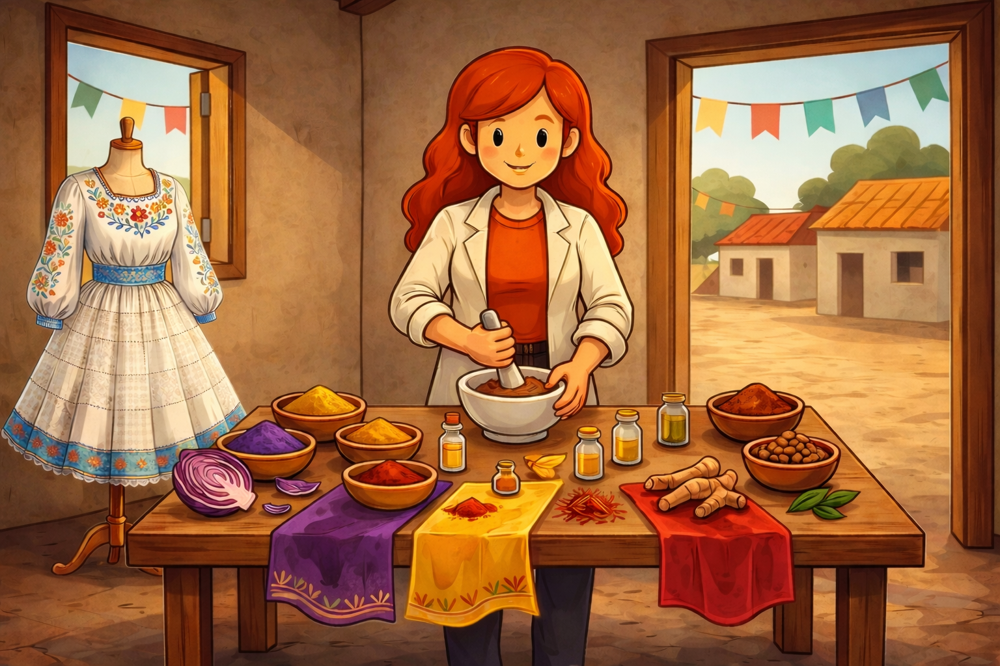

Química das Cores do Boi — Laboratório Cultural
Visualização da Bancada
Amostra / Fita

Diário da Artesã-Química
- Registro inicial: selecione o pigmento e prepare a solução.
Progresso do preparo
Conquista desbloqueada: Química das Cores do Boi
—
—